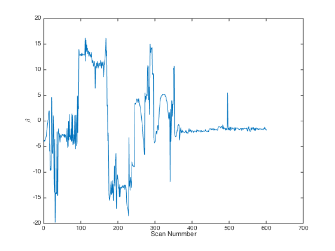
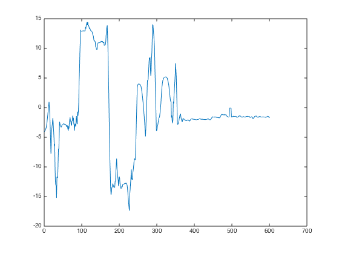
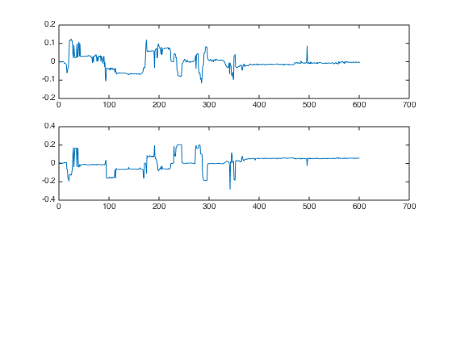

Contents
Finding the angle of the wheelchair on the stairs
clear all;
close all;
Initialize Variables
fov_s = 260;
fov_d = 300;
phi_1 = -2;
phi_2 = 1;
scan_s = 100;
scan_d = 600;
for scan_nr = scan_s:scan_s+scan_d;
[v_r_1,z_r_1] = matching('/cloud_1',scan_nr,phi_1,fov_s,fov_d);
[v_r_2,z_r_2] = matching('/cloud_2',scan_nr,phi_2,811-fov_s-fov_d,fov_d);
a = .63;
beta = 180/pi*atan((v_r_1(3)-v_r_2(3))/a);
beta_v(scan_nr-(scan_s-1)) = beta;
v_1_h(scan_nr-(scan_s-1)) = cos(beta*pi/180)*v_r_1(1);
v_2_h(scan_nr-(scan_s-1)) = cos(beta*pi/180)*v_r_2(1);
v_1_t(scan_nr-(scan_s-1)) = cos(beta*pi/180)*v_r_1(2);
v_2_t(scan_nr-(scan_s-1)) = cos(beta*pi/180)*v_r_2(2);
end
figure
plot(beta_v);
xlabel('Scan Nummber'),ylabel('\beta');
beta_v_s = smooth(beta_v);
figure
plot(beta_v_s);
figure
subplot(3,1,1)
plot(v_1_h-v_2_h);
subplot(3,1,2)
plot(v_1_t-v_2_t);
  